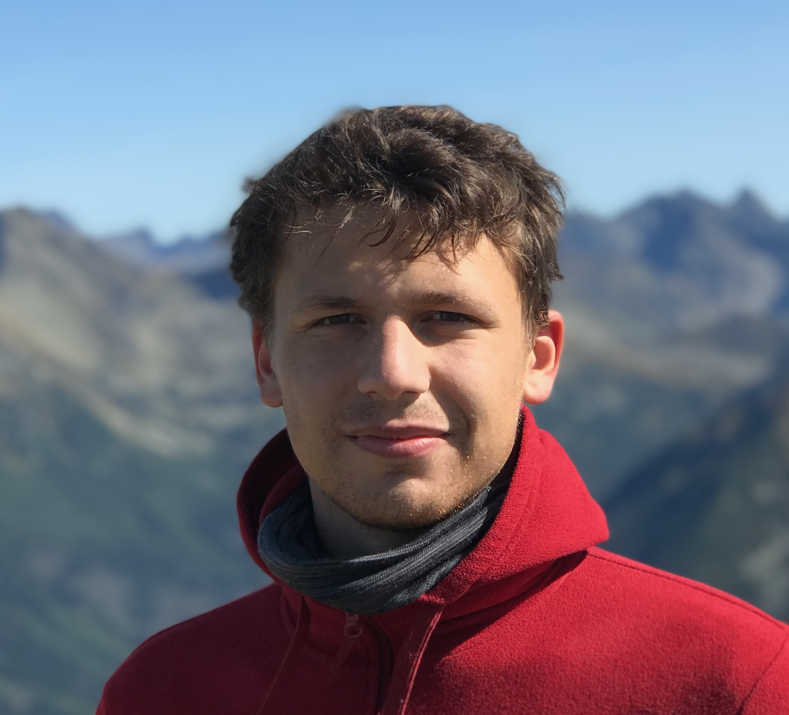

Paweł Poczobut
I am first-year Master's student at Univeristy of Warsaw, Faculty of Mathematics, Informatics and Mechanics.
email address: (first initial).(last name)(at)student(dot)uw(dot)edu(pl)
Interests.
My current mathematical interests include:
- deformation theory I wrote my Bachelor's Thesis An algebraic variant of the Fischer-Grauert Theorem on isotriviality of smooth projective families
with isomorphic fibers. Will be available soon (here and on arXiv).
- arithmetic geometry: I am currently studying prismatic cohomology and p-adic Hodge theory
- non-Archimedean geometry - I am currently studying perfectoid spaces and Berkovich spaces
This page is brand new and under permanent construction.
Preprints
- An algebraic variant of the Fischer-Grauert Theorem In preparation for submission.